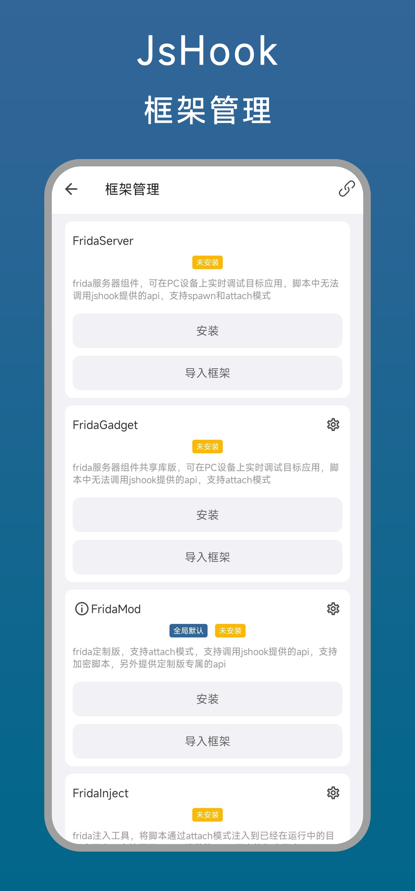
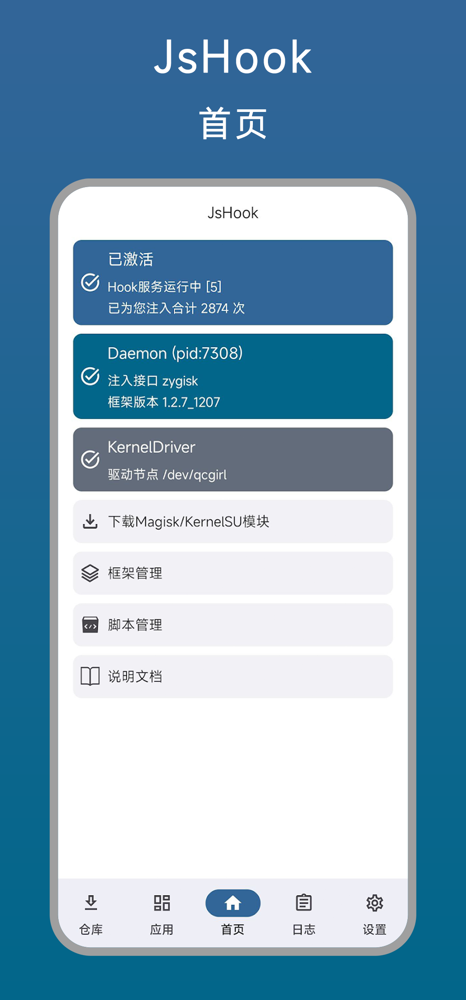
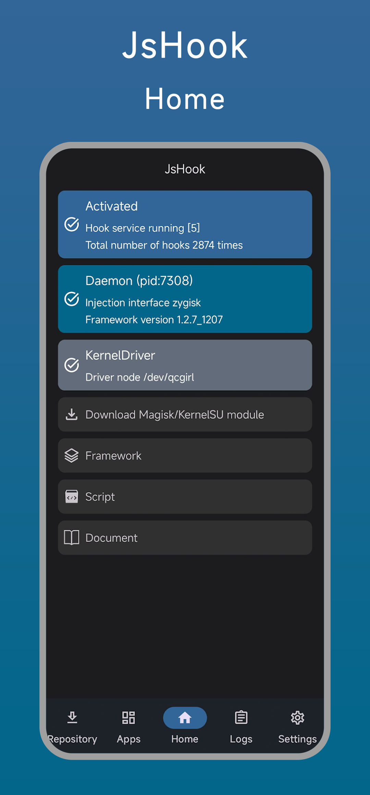

从普通用户到离不开内核驱动——jshook 用了大半年的真实感受
装 jshook 是冲着 Frida 来的，没想到用着用着内核驱动模式成了主力。双引擎切换、MCP 接入、反检测这些当初没在意的细节，时间久了才显出价值和毛病。
当初为什么装它
说实话一开始装 jshook 挺随便的——就是想在手机上试试 Frida，不想单独跑一台电脑端的 frida-server。安装包从官方下载拿的。选它主要是去jshook官网看了看介绍，听说同时支持 rhino 和 Frida 两套引擎，对我这种以前写过点 Xposed 的人来说，两套都能用等于多了一层安全感。那段时间正好在折腾 Unity 游戏的一些小参数，想着有个趁手的工具改改数值就行。
变化最明显的地方：内核驱动模式成了主力
刚上手那会儿根本没注意内核驱动模式这个选项，觉得不就是个开关吗。直到有次玩的那款游戏更新后加了反注入检测，普通模式一开 Hook 就闪退，才被迫去翻了一下jshook文档才弄明白怎么开。
内核驱动模式的核心逻辑其实很简单：脚本不在目标进程里跑，而是克隆一个独立的观察者进程，通过内核驱动模块直接读写内存。听起来比注入复杂，但实际用起来反而更省心。目标进程崩溃不影响脚本、没有注入痕迹难被检测、能读写任意内存地址——这三点叠加起来，基本解决了我当时最大的痛点。
说个反直觉的感受：从普通模式切到内核模式，我反而少踩了很多坑。普通模式下 Java 层 Hook、Interceptor、各种 view 操作都能用，但也正因为能用的东西多，写脚本的时候很容易在不同 API 之间乱窜。内核模式把可用 API 收得很窄，就 kernel.getModuleBase、kernel.readDword/writeDword、memory 这几个，加上 modmenu 和 moddraw——反而逼着我把逻辑写得更清晰。

越用越烦的那些细节
不是说内核模式完美。最烦的就是 API 限制。观察者进程和目标进程物理隔离这个设计，直接砍掉了一大堆在普通模式下顺手的东西：Java.use()、Interceptor.attach()、Module.findBaseAddress() 全不可用。刚开始切换的时候经常在脚本里惯性敲 Java.perform()，跑起来才想起来这在内核模式下根本没有执行环境。
还有地址基址的问题。动态链接的 SO 库每次加载地址都不一样，普通模式下 Frida 帮你处理了这些，内核模式下得每次自己重新获取基址。这不是大问题，但切换模式测试的时候偶尔会忘，然后对着一串垃圾值调半天。

哪个功能成了每天离不开的
如果一定要说一个，就是 runtime.isKernel 这个判断。它让同一份脚本能同时跑在两种模式下——普通模式下走完整 Frida + JsApi，内核模式下切纯 kernel API。写一次、不用维护两份脚本，这个设计让我后来所有的脚本都按双模式来写。
还有 MCP 服务。这个是后来才开的，用 VS Code Copilot 直接调 jshook 的工具，省了好多手动写模板代码的时间。找类、查方法、读内存地址这些以前要翻半天文档的事，现在直接跟 AI 说就行。虽然只在本地开发用，不敢暴露到公网，但确实是个好用的东西。
当初高估了什么，低估了什么
刚装的时候高估了 rhino 引擎。以为两套引擎切换着用很灵活，结果实际场景里几乎一直用 Frida——rhino 能做的事 Frida 都能做，Frida 能做的 native Hook rhino 做不了。现在 rhino 基本上就是个备份，只有偶尔改个简单的 Java 返回值才用得上。
低估了内核驱动模式的价值。当初觉得它是个小众功能，难被检测而已。用久了才发现它的设计逻辑本身就更干净——不污染目标进程、崩溃隔离、API 边界清晰，这些不是反检测的小手段，而是工具设计思路上的根本区别。
去留结论
目前没打算卸载。主要是内核驱动模式已经成了我所有 Hook 脚本的默认运行方式，换别的工具还得重写一遍。但我也清楚，一旦哪天我需要做复杂的 Java 层逻辑 Hook，可能还是得切回普通模式，或者干脆换一套工具链。
什么信号出现就该换了？如果某款游戏的反检测升级到内核驱动模式也过不去的程度，或者 jshook 的内核驱动模块不再适配我的手机内核版本，那时候就得考虑替代方案。不过目前这两样都没发生，继续用着就行。

最后说句实在的
用了这么久，jshook 给我的感觉不是那种一眼惊艳的工具，而是一个慢慢磨合出默契的搭档。内核驱动模式从"试试看"变成主力，MCP 从"什么玩意"变成日常依赖，这些变化都不是第一天就能预料到的。工具的价值，有时候真的是时间用出来的。这份使用记录我同步在三个仓库里存了一份，GitHub、Gitee、GitCode 都有，方便不同网络环境的朋友查阅。